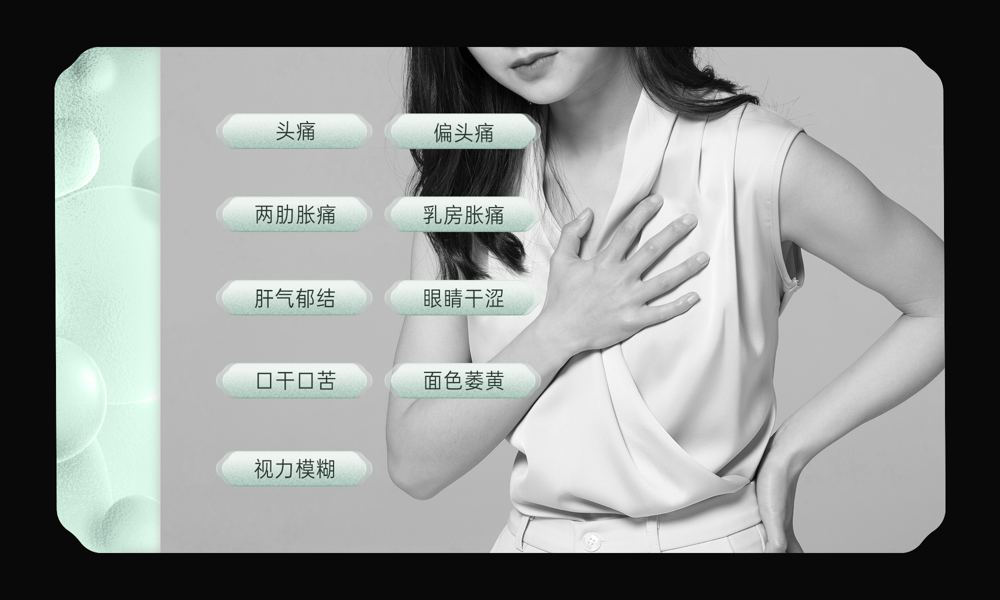

<!DOCTYPE html>
<html lang="zh">

<head>
	<meta charset="UTF-8">
	<meta name="viewport" content="width=device-width, initial-scale=1.0">
	<title></title>
	<link rel="stylesheet" href="../css/tds.css">
	<style media="screen">
		body {
			margin: 0;
			background-color: transparent;
		}
		
		.b1{
			position: absolute;
			width: 233px;
			height: 62px;
			left: 86px;
			top: 134px;
			opacity: 0;
		}
		
		.b2{
			position: absolute;
			width: 233px;
			height: 62px;
			left: 86px;
			top: 309px;
			opacity: 0;
		}

		.mnavi{
			position: absolute;
			right: 59px;
			top: calc(50% - 164px);
			width: 108px;
			height: 328px;
			background-image: url(../image/index2/index2-1/slide3-m4/navibg.png);
			background-repeat: no-repeat;
			background-size: cover;
			display: flex;
			flex-direction: column;
			align-items: flex-start;
			justify-content: start;
		}

		.mnavib{
			position: relative;
			width: 61px;
			height: 61px;
			margin-top: 1.5px;
			margin-left: 6px;
			margin-bottom: 18px;
			transition: 0.5s;
			opacity: 0;
		}

		.bg {
			transition: 0.5s;
		}
		
		.mbtn{
			position: absolute;
			width: 70px;
			height: 164px;
			transition: 0.5s;
		}

		#btn1{
			left: 126px;
			top: 122px;
		}

		#btn2{
			left: 126px;
			top: 300px;
		}

		.crossbtn{
			right: 30px;
			top: 30px;
		}
	</style>
</head>

<body>
		
<!-- 		 -->
		
		
	
	<script type="text/javascript" src="../script/api.js"></script>
	<script type="text/javascript" src="../script/anime.js"></script>
	<script type="text/javascript" src="../script/tds1.0.js"></script>
	<script type="text/javascript" src="../script/ajax.js"></script>
	<script type="text/javascript">
		apiready = function () {
			api.parseTapmode();
			show(1)
		}

		function show(num){
			$api.byId('btn1').src = "../image/index2/index2-1/slide2-m2/b1.png"
			$api.byId('btn2').src = "../image/index2/index2-1/slide2-m2/b2.png"
			$api.byId('btn' + num).src = "../image/index2/index2-1/slide2-m2/b" + num + "on.png"
			$api.byId('bg1').src = "../image/index2/index2-1/slide2-m2/d" + num + ".png"
		}

		/* tabCreate关闭按钮fn */
		function closeFn() {
			closeFrame()
		}
	</script>
</body>

</html>